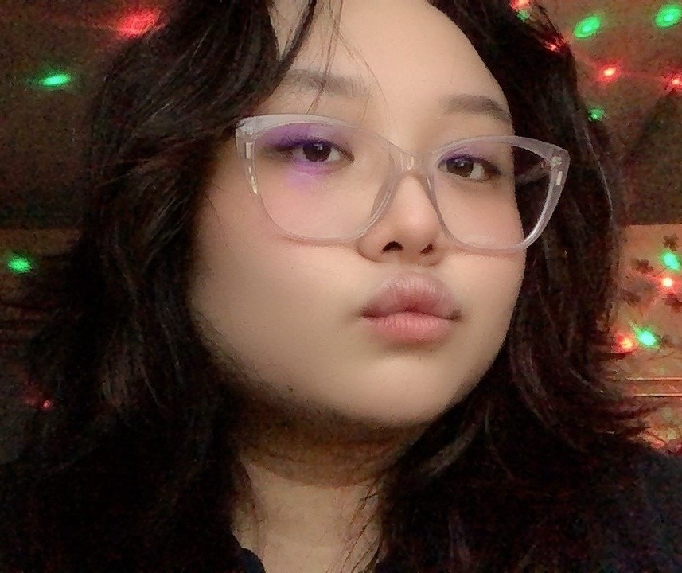

Heyya! My name is Nurul Hafizah Binti Morhtar.
I am an undergraduate student at Universiti Malaysia Sarawak and currently pursuing my degree in Bachelor of Computer Science (Hons) in Network Computing.
You can call me Piza or Ai.
Ai as in "I" or "Aye" but not A.I (╥ ᴗ ╥)I am a self-taught artist with a passion for digital art while pursuing my degree in computer science. I started my drawing journey during my early years of studying computer science during my Diploma years.
ദ്ദി(˵ •̀ ᴗ - ˵ ) ✧
My journey as an artist and a student has been a unique blend of creativity and technical exploration. I have always been fascinated by the intersection of art and technology, which has led me to pursue a degree in computer science while nurturing my passion for digital art.
( ◡̀ ̫ ◡́) ✧
Throughout my academic journey, I have engaged in various projects that allowed me to express my creativity while applying technical skills. This website serves as a portfolio to showcase my work and share my experiences with others.
( •̯́ ₃ •̯̀) In my free time, I enjoy:
🌸 Drawing [Digitally] and in which Iദ്ദി◝ ⩊ ◜.ᐟ Here are some of the tools I use regularly for my artistic and technical work:
🌸 Visual Studio Code (coding purposes)